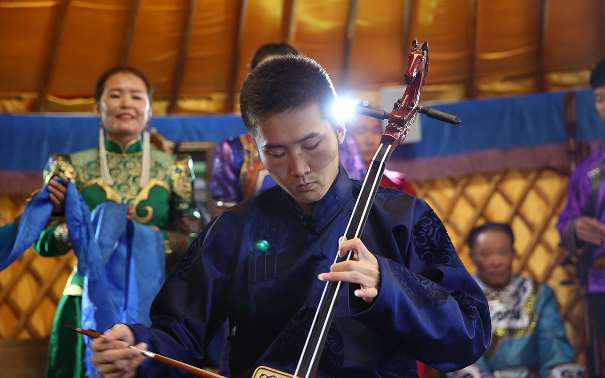
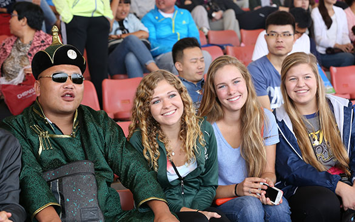
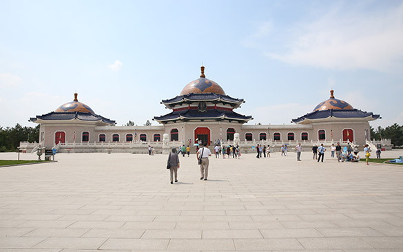
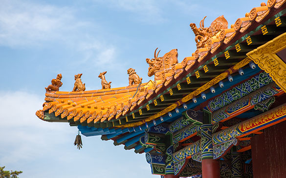
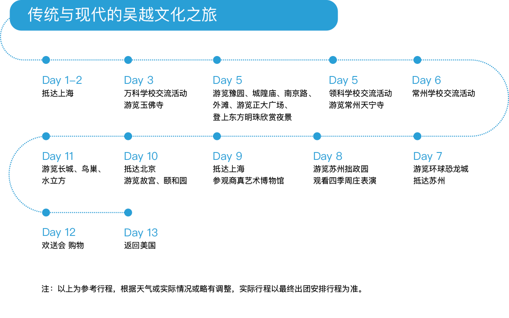

马背上的民族文化之旅
内蒙古是典型的草原游牧文化，世代以草原为家的蒙古族人民，在辽阔壮美的大草原形成了热情好客、善良朴实的爽朗性格。内蒙古还有成吉思汗陵、大召寺等代表蒙古族丰富历史文化的建筑。我们希望中美青年从不同的视角，感受蒙古独特的传统习俗和探索千年前的大蒙古帝国的历史演变轨迹。在“马背上的民族文化之旅”中，深刻感受中国少数民族丰富多彩的文化特色，从民族交融的历史演变中汲取文化的力量。
路线：北京-内蒙-北京
时间：2018.06.10 ~ 2018.06.22
项目简介
• 学校交流：与中国师生一同交流，体验中国传统文化课程，在学习互动中深入了解中国少数民族传统文化。
• 文化遗产：游览成吉思汗陵、大召寺等代表蒙古族丰富历史文化的建筑，感受少数民族历史文化特色。
 • 当地文化：来碗地道奶茶和马奶；品尝炒米、肉干和奶酪的独特滋味。
• 结业后收获“文化交流使者”证书，丰富个人文化背景。

行程安排
想和更多有趣的朋友同行， 现在就加入我们的旅途吧！